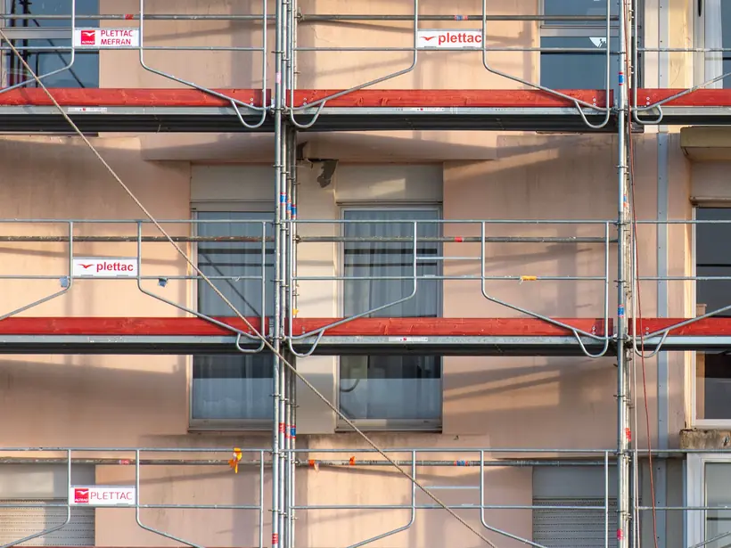

Fasadiniai pastoliai
Vieni populiariausių pastolių Lietuvoje ir Europoje: fasadų šiltinimui, dažymui, tinkavimui, balkonų remontui ir stogų pakalimui. Lengvi, greitai sumontuojami ir patikimi.
Užklausti kainą- Sistema
- PLETTAC
- Aukščio žingsnis
- 2 m
- Plotis
- 0,73 m arba 1,09 m
- Tvirtinimas
- ankeriai į fasadą
- Sauga
- borto lentos, tinklai, plėvelės